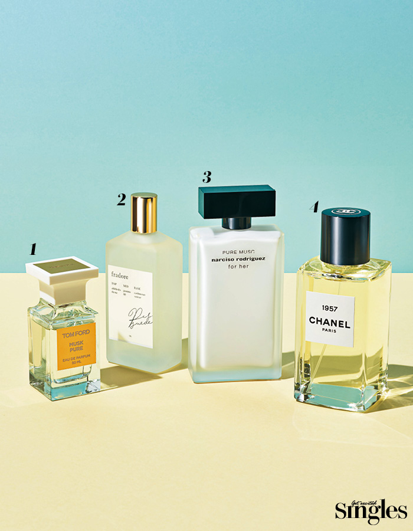

An incense burning the start of one week

It is Monday when a golden weekend is over and another refreshment is needed.
Smooth musk flavor to comfort your heart is ideal.
When the fragrance of white musk is spread, the flavor of vanilla or floral accompanies the warm
feeling.
1. Tom Ford Musk Pure |
The ylang ylang and offer on the musk incense gives a clean incense. 50ml 328,000 won.
2. Fragrance-free fragrance 06 |
The soft and powdery vanilla imparts a soft fragrance. 100ml price not confirmed.
3. Narciso Rodriguez For Her Pure Musk Eau De Parfum |
Refined musk fragrance Cache Meran adds a white floral bouquet to complete an elegant and sophisticated
fragrance. 100ml 173,000 won.
4. Chanel Les Eclairs de Chanel 1957 |
Dark white musk and woody notes create the signature signature of Chanel. 200ml 50,000 won.